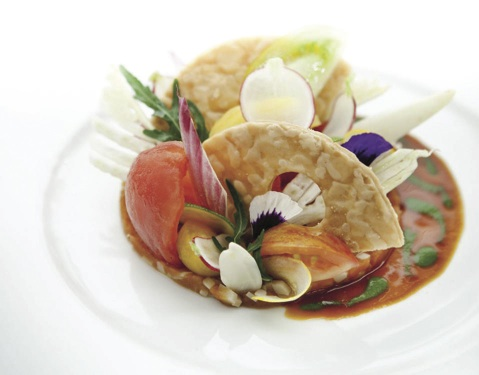
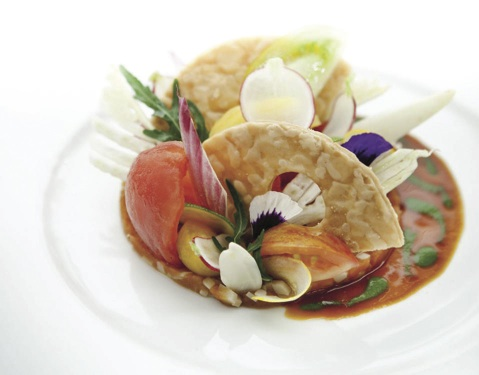
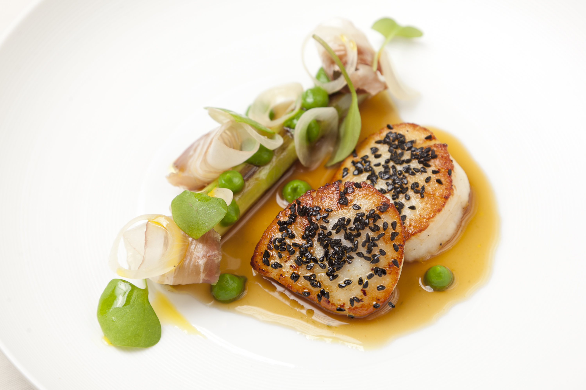
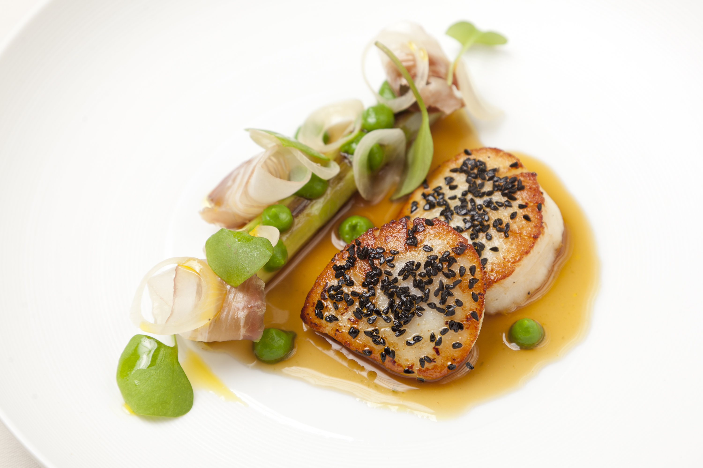

미쉐린 가이드의 탄생, 끝없는 여정의 시작
미쉐린 가이드의 역사는 1889년 프랑스 중부의 끌레르몽 페랑 (Clermont-Ferrand)에서 앙드레(Andre)와 에두아르 (Edouard) 미쉐린 형제가 미쉐린 타이어 회사 (Manufacture Francaise des Pneumatiques Michelin)를 설립하면서 시작되었습니다.
1900년, 프랑스에는 자동차대수가 3,000대에 불과했고 열악한 도로여건으로 운전을 하는 것이 모험으로 받아들여지던 시기였습니다.
그래서 미쉐린 형제는 운전자에게 타이어를 교체하는 방법, 주유소의 위치, 여행 중 맛있는 음식을 제공하는 식당, 잠을 청할 수 있는 숙박시설과 같은 정보를 담은 책자를 만들기로 결심했습니다. 이 책자가 미쉐린 가이드의 탄생이었습니다.
미쉐린 가이드의 목표는 확실합니다. 최고의 식당과 호텔을 발견하는 것입니다.
이 작업을 수행하기 위해 미쉐린의 직원으로 소속된 전문 평가원(Inspector)들은 전문 지식과 풍부한 경험을 바탕으로 전 세계를 탐색합니다. 공정성을 보장하기 위해 익명으로 평가를 진행하는 이런 방식은 아무도 시도하지 않았던 새로운 방식이었습니다.
100여년의 세월 동안, 울퉁불퉁 했던 도로들은 첨단 고속 도로로 변모했으며 미쉐린의 발전과 함께 음식 또한 발전했습니다. 과거의 조리사는 오늘날 셰프가 되었고 장인은 예술가가 되었으며 전통 요리는 예술적 작품으로 재 탄생했습니다. 그 동안 미쉐린은 여행자들의 동반자로서 이러한 변화에 동참해 왔습니다.
미쉐린 스타(MICHELIN Star)는 미쉐린 가이드의 가장 유명한 상징입니다. 1926년, 최고의 맛을 선사하는 식당을 소개하기 위해 시작되어 오늘날 미식 문화의 글로벌 표준으로 자리잡게 되었습니다!
 



 
